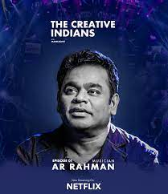

Music Director

Awards :- Academy Award , Golden Globes , British Academy of Film and Television Arts Etc.
A.R.Rahman
Skilled in Carnatic music, Western classical, Hindustani music and the Qawwali style of Nusrat Fateh Ali Khan,
Rahman has been noted to write film songs that amalgamate elements of these music systems and other genres,
layering instruments from differing music idioms in an improvisatory manner.
Symphonic orchestral themes have accompanied his scores, occasionally employing leitmotif. In the 1980s, Rahman
recorded and played arrangements on monophonic sound, synonymous with the era of his musical predecessors K. V.
Mahadevan and Vishwanathan–Ramamoorthy. In later years his methodology changed as he experimented with the
fusion of traditional instruments with new electronic sounds and technology.
Rahman's musical interests and outlook stem from his love of experimentation. Rahman's compositions, in the vein
of past and contemporary Chennai film composers, bring out auteuristic uses of counterpoint, orchestration and
the human voice, melding Indian pop music with unique timbre, forms and instrumentation. By virtue of these
qualities, broad ranging lyrics and his syncretic style, the appeal of his music cuts across the spectrum of
classes and cultures within Indian society. His first soundtrack for Roja was listed in Time's "10 Best
Soundtracks" of all time in 2005. Film critic Richard Corliss felt the "astonishing debut work parades Rahman's
gift for alchemizing outside influences until they are totally Tamil, totally Rahman." Rahman's initial global
reach is attributed to the South Asian diaspora. The music producer Ron Fair considers Rahman to be "one of the
world's great living composers in any medium".
The director Baz Luhrmann notes
" I had come to the music of A. R. Rahman through the emotional and haunting score of Bombay and the wit and
celebration of Lagaan. But the more of AR's music I encountered the more I was to be amazed at the sheer
diversity of styles: from swinging brass bands to triumphant anthems; from joyous pop to West-End musicals.
Whatever the style, A. R. Rahman's music always possesses a profound sense of humanity and spirit, qualities
that inspire me the most." Rahman has introduced the 7.1 technology in south Indian movies to provide better
output.
The Orchestra

VIOLIN 1
Michael Swan – Concertmaster
Jacqueline Nutting – Assistant Concertmaster
Lillian Jen-Payzant
Joan Savage
Simon Fanner
Maxim Pletnev
Samara St. Louis
Zheng Wang (On Leave)
VIOLIN 2
Oxana Ossiptchouk – Principal
Chair supported by Kathryn Warden & Peter Stoicheff
Karen Bindle – Assistant Principal
Ava Leschyshyn (On Leave)
Drusilla Waltz
Christina Barry
Talant Kosmosbekov
Kevin MacMillan
Wagner Barbosa
VIOLA
James Legge – Principal
Chair supported by the Viola Section of the Saskatoon Philharmonic Orchestra
Saache Heinrich – Assistant Principal
Miles Buchwaldt
Jeremy Janzen
Sarah ter Velde
Gideon Weisman
CELLO
Joel MacDonald – Principal
Chair supported by Sandra Beardsall, Bill Richards, Esther Cherland, and David Jobling
John Payzant – Assistant Principal
Bernadette Wilson
Carman Rabuka
Christina Bakanec
Scott McKnight
BASS
Chantel Leung – Principal
Chair in memory of Wayne Turner
David Humphrey – Assistant Principal
Stephen Kreuger
Zachary Carter
Rhett Schroeder
FLUTE
Allison Miller – Principal
Chair supported by Lilian and Doug Thorpe
Brenda Moats (Flute, Piccolo)
OBOE
Erin Brophey – Principal
Chair supported by Anne and Neil Reddekopp
Kevin Junk (Oboe, English Horn)
CLARINET
Margaret Wilson – Principal
Chair supported by Theresa Aubin-Singh, Sanjeev Singh, and Family
Gilles Turcotte
BASSOON
Stephanie Unverricht – Principal
Chair supported by Dr. Mary C. Marino and Chris Kent
Marie Sellar (Bassoon, Contrabassoon)
HORN
Carol-Marie Cottin – Principal
Chair supported by William and Suzanne Dust
Arlene Shiplett
James Robertson
TRUMPET
Terry Heckman – Principal
Chair supported by Ken and Sharon Thomas
Aaron Bueckert
TROMBONE
Don Schmidt – Principal
Chair supported by Darla Saunders
Brian Unverricht
Dawn McLean Belyk
TUBA
Brent Longstaff – Principal
Chair supported anonymously
TIMPANI